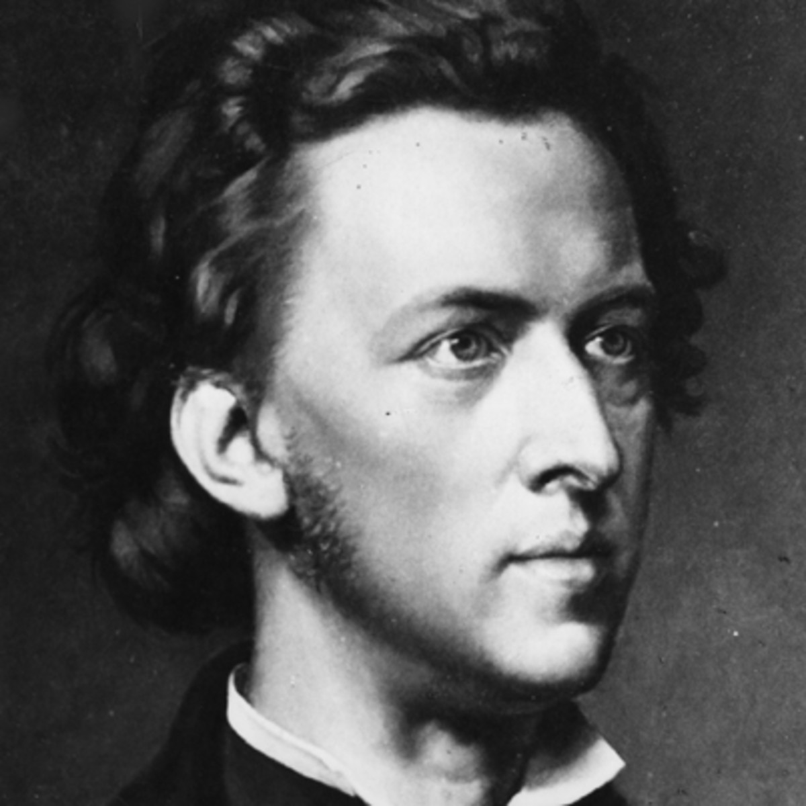
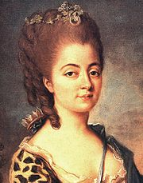
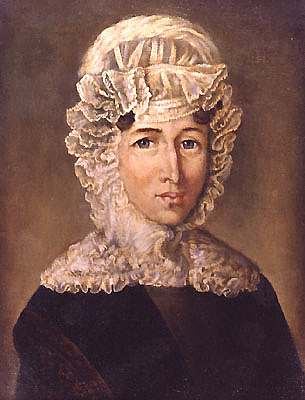
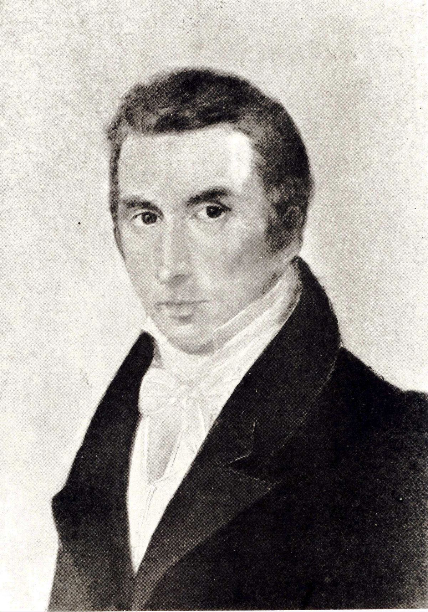
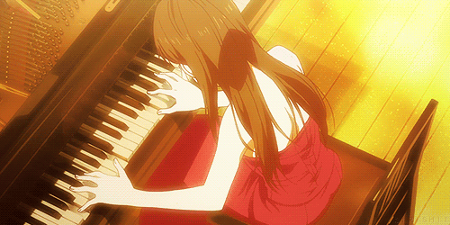
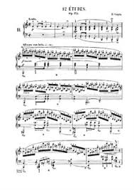
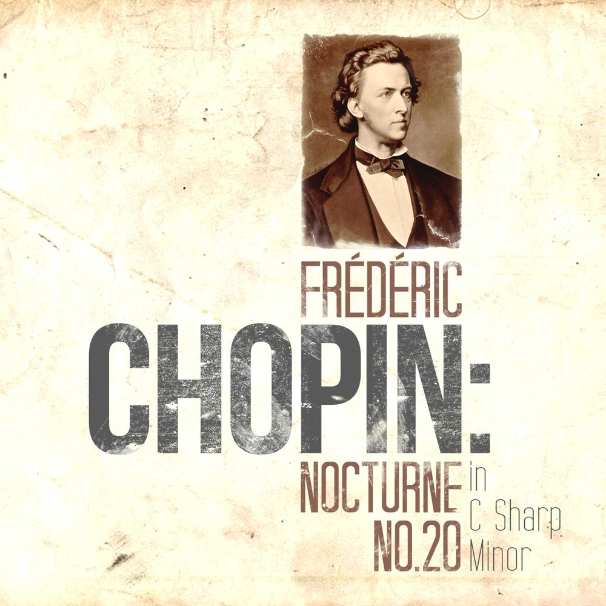
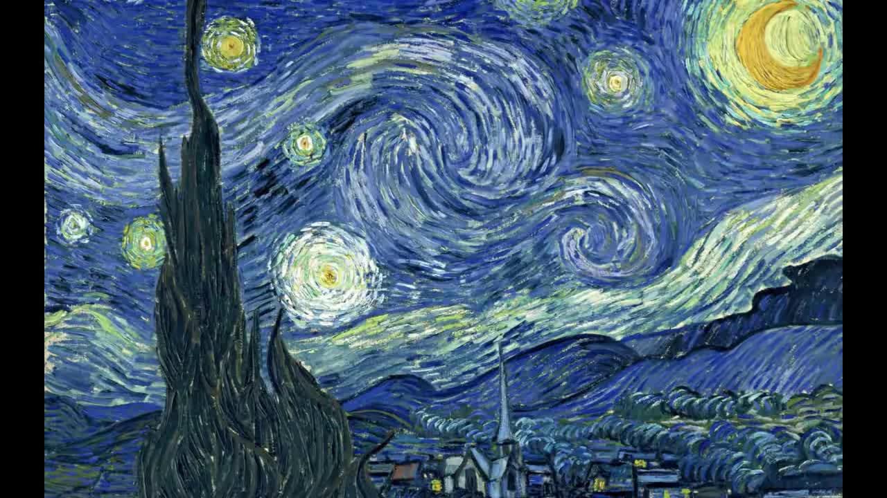

 Родился 22 февраля (по другим данным, 1 марта) 1810 г. в Желязова-Воле недалеко от Варшавы в семье учителя. Музыкальное дарование Шопена проявилось очень рано. В 1817 г. были изданы первые полонезы юного композитора (всего в период 1817—1846 гг. Шопеном создано 16 полонезов),
и с этого же времени начались выступления в концертах в качестве пианиста-виртуоза. Первым учителем музыки для Шопена стал чешский музыкант В. Живный. А затем, поступив в Высшую музыкальную школу в Варшаве, он занимался у известного композитора, позднее — директора Варшавской консерватории Ю. Эльснера.
В 1827 г. Шопен закончил обучение и стал систематически выступать в концертах, исполняя и свои собственные сочинения. В 1828 г. композитор совершил первую гастрольную поездку в Берлин, а затем в Вену, принёсшую ему огромный успех. С 1829 г. начала расти слава Шопена не только как гениального пианиста, но и как композитора. Настоящий поэт фортепиано, он посвятил этому инструменту почти всё своё творчество. Им написаны два фортепианных концерта (1829 и 1830 гг.), три сонаты, в том числе Соната си-бемоль-минор со знаменитым Траурным маршем (1828—1844 гг.), четыре баллады (1835— 1842 гг.), 21 ноктюрн (1827—1846 гг.), 27 этюдов (1829—1839 гг.), 25 прелюдий (1831—1839 гг.). Кроме того, Шопену принадлежат 19 песен (1829—1847 гг.), соната для виолончели и фортепиано (1846 г.) и многие другие произведения. В 1830 г. композитор навсегда покинул Варшаву, недолго прожил в Вене, после чего переехал в Париж. Во французской столице вокруг Шопена собрался кружок друзей и единомышленников, среди которых были его ближайший друг Ф. Лист, художник Э. Делакруа, писатель О. Бальзак, поэт А. де Мюссе, композитор Г. Берлиоз. Особенно близкие отношения сложились у Шопена с писательницей Авророй Дюдеван, известной под псевдонимом Жорж Санд. В течение восьми лет она была подругой композитора. В 1837 г. Шопен совершил путешествие в Англию и Шотландию, длившееся почти год, а 1838— 1839 гг. провёл на испанском острове Мальорка. Конец жизни музыканта был омрачён болезнью лёгких, которая и стала причиной его смерти. Умер 17 октября 1849 г. в Париже, похоронен на кладбище Пер-Лашез. В завещании Шопен просил отвезти его сердце на родину, в Польшу, что и было исполнено. Сердце композитора покоится в варшавском костёле Святого Креста.㱜$♦•◘○║♠♣☺



Та самая Аврора Дедюван и родители Фридерика
Произведения
Можно долго перечислять все произведения Шопена, я назову лишь количество музыки каждого класса и их примеры:
1)Мазурки (58):Соч. 6 — 4 мазурки:фа-диез минор, до-диез минор, ми мажор и т.д.;
4)Вальсы (20):Соч. 34:Большой блестящий вальс ля-бемоль мажор (1835) (В. 94) (Вальс №2);
Большой блестящий вальс ля минор (1831) (В. 64) (Вальс №3);
Большой блестящий вальс фа мажор (В. 118) (Вальс №4) и т.д.;
5)Прелюдии (всего 27):24 прелюдии, соч. 28 (1836—1839) До мажор;
Ля минор;
Соль мажор;
Ми минор;
Ре мажор;
Си минор;
Ля мажор и т.д. ;
6)Этюды (всего 27): Соч. 25:
Ля-бемоль мажор (Пастух);
Фа минор (Пчелы);
Фа мажор (Всадник);
Ля минор (Паганини);
Ми минор (Неправильная нота);
Соль-диез минор (Терции);
До-диез минор (Виолончель);
Ре-бемоль мажор (Сексты);
Соль-бемоль мажор (Бабочка);
Си минор (Октавы);
Ля минор (Зимний вихрь);
До минор (Океан) и т.д.;
также:
7)Экспромты (всего 4);
8)Скерцо (всего 4);
9)Баллады (всего 4);
10)Сонаты для фортепиано (всего 3).
Музыкальная библиотека
1.Эми из аниме "Your lie in April" играет Op.25 No11(Winter Wind)

Первая страница нот этого произведения

2.Мелодия, способная успокоить любого: Nocturne No.20 in C Sharp Minor, Op.posth. Этот прекрасный ноктюрн Шопена иначе называется "посмертным", потому что был издан уже после смерти композитора.

3.Композиция, которую слышал каждый. Spring Waltz
4.Творения Шопена лучше всего слушать весной. Frеdеric Chopin Nocturne 2 тому подтверждение.

5.Еще одно из известных произведений гениального пианиста: Revolutionary Etude